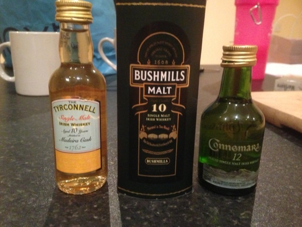

Page 53 of 60
Re: What are you having yourself?

Posted:
Fri Aug 02, 2013 12:17 amby IainB
Rum cask whiskeys - CWC Midleton rum cask blend, bushmills single cask, Teeling small batch. Now onto an equal parts blend of all 3 - sacrilegious but delicious!
Re: What are you having yourself?
Posted:
Wed Aug 14, 2013 2:01 amby Good Whiskey Hunting
Gilbeys Redbreast from 60's, beautiful stuff. A friend of mine kept some for me. I really didn't expect it to be so good. Awesome.

Re: What are you having yourself?
Posted:
Wed Aug 14, 2013 8:45 amby Luke Gough
Good Whiskey Hunting wrote:Gilbeys Redbreast from 60's, beautiful stuff. A friend of mine kept some for me. I really didn't expect it to be so good. Awesome.
The problem with the post-60's Gilbey's Redbreast is that they were running down the last stock Jameson gave them, and, oh dear, it tells...

Re: What are you having yourself?
Posted:
Thu Aug 22, 2013 2:32 amby varizoltan
Tullamore Dew Phoenix 55%abv
Re: What are you having yourself?
Posted:
Fri Aug 23, 2013 11:58 amby Luke Gough
varizoltan wrote:Tullamore Dew Phoenix 55%abv
Tasting notes please!

Re: What are you having yourself?
Posted:
Sat Aug 24, 2013 6:06 pmby Joel1802
Luke Gough wrote:Good Whiskey Hunting wrote:Gilbeys Redbreast from 60's, beautiful stuff. A friend of mine kept some for me. I really didn't expect it to be so good. Awesome.
The problem with the post-60's Gilbey's Redbreast is that they were running down the last stock Jameson gave them, and, oh dear, it tells...
I find it is okay until the early 80s. Once you get to the stuff with the extended metal cap with the robin on it you're in to some pretty dodgy territory.
Re: What are you having yourself?
Posted:
Sat Aug 24, 2013 6:09 pmby Joel1802
Old Weller 107,
BB&R 16 y.o. Longpond rum (1986),
RB12.
All great booze, but the rum stands out. Good to be back from sea, maybe that's why the rum kick?

Re: What are you having yourself?
Posted:
Wed Aug 28, 2013 10:34 pmby Good Whiskey Hunting
I'm having some Redbreast 15(2008). Really enjoying it. I can't help compare to the 60's stuff I had last week. Some interesting similarities.
Re: What are you having yourself?
Posted:
Thu Sep 12, 2013 6:38 pmby danny56712
Bought these three minis last night, my first time for each but a must for all Irish whiskey explorers hence my differing choices!!
I commenced with the tyreconnell Maderia finish and really enjoyed it, quite sweet yet 46% so a lovely finish on it too! All in all i am an amateur but a great whiskey to say the very least!
Bushmills ten year old malt was next on list at 40%: i found it smelt of banana as others had said, tasted very creamy which i liked but again very different to the Tyrconnell! Finish was in my opinion a bit weak, needed more kick!
Connemara 12 year old: my first peated whiskey, and i was left disappointed not by the whiskey but my taste buds as did not enjoy the whole peated taste at all but did love it on the nose!
No pro tasting above but iv no interest in talking bull either, just my general thoughts on it all!
- 
- Great to have such good miniatures in my Local Off Licence
- image.jpg (85.23 KiB) Viewed 8062 times
Re: What are you having yourself?
Posted:
Thu Sep 12, 2013 8:14 pmby JohnM
Three nice whiskeys. I haven't had any of them in quite a while. Years since I had a Connemara 12.
At the Celtic Whiskey Club blind tasting last week, there was Green Spot, Yellow Spot, Barry Crockett Legacy, Redbreast 12, Redbreast 15 and Powers John's Lane.
I was surprised how much I liked the Yellow Spot. My favourites were Green Spot, Redbreast 15 and Yellow Spot, but the were all good. Barry Crockett Legacy might just as easily have got in there. An excellent night.
Re: What are you having yourself?
Posted:
Thu Sep 12, 2013 9:42 pmby IrishWhiskeyChaser
Tullamore Phoenix 55% ... Travel Retail €49.99.
Picked up a couple of these in the T2 this week.
A lovely rich cask strength (ish) whiskey from Tullamore. It's actually a blend and described as high strength and probably will always be bottled at 55% so technically not a cask strength.
Not generally a Tully fan but quit impressed with it so far.
This it seems has been finished in Oloroso casks and really rounds it off and does not feel like a finish.
The sherry is not over done but sweetens it up nicely feels like honey in there too. Nice bit of spiceyness also.
Quite impressed with this.
Re: What are you having yourself?
Posted:
Wed Oct 02, 2013 1:33 amby Good Whiskey Hunting
I've lots of bourbons that I've only tried some of and left them. Recently I've been trying them with ice as opposed to water and I'm liking them.
Most recent is Jim Beam 'Beam's Choice'.
Re: What are you having yourself?
Posted:
Thu Oct 03, 2013 12:26 amby Good Whiskey Hunting
I'm just in after the Irish distillers preview event. Nice to try the new Powers, Paddy and Redbreast 21. I've a little left in a redbreast 15 year old so it bottoms up. I think it compares well.
Re: What are you having yourself?
Posted:
Wed Oct 16, 2013 9:10 pmby varizoltan
great to hear the news from The Irishman company and the new name is Walsh Whiskey Distillery, which will start distilling their own in 2016.
here is a glass of The Irishman Founder's Reserve for their great success
Re: What are you having yourself?
Posted:
Sat Oct 19, 2013 8:58 pmby IrishWhiskeyChaser
Powers Signature Release ...
Dont know what price point this will be at ... But I'm guessing under the 12yo John's Lane price. If so this will be a regular me thinks.
Blocked nose so not doing well on the nose but if the taste is anything to go by this is a great drop.
Smooth and soft on the palate ...
There seems to be a glucose sweetness mixed with a wonderful spicyness and a touch of aniseed. There is a bit of sharp dry on the finish too mixed in with all that love sweet & spice.
Can't wait to try this on a clear head ...
Re: What are you having yourself?
Posted:
Sat Oct 19, 2013 9:16 pmby DavidH
IrishWhiskeyChaser wrote:Powers Signature Release ...
Dont know what price point this will be at ... But I'm guessing under the 12yo John's Lane price.
About $45 in the US, while I've seen the John's Lane at $70 online.
Re: What are you having yourself?
Posted:
Sat Oct 19, 2013 9:36 pmby Good Whiskey Hunting
DavidH wrote:IrishWhiskeyChaser wrote:Powers Signature Release ...
Dont know what price point this will be at ... But I'm guessing under the 12yo John's Lane price.
About $45 in the US, while I've seen the John's Lane at $70 online.
I think they said around the €45 mark.
Re: What are you having yourself?
Posted:
Sun Oct 20, 2013 10:03 pmby IrishWhiskeyChaser
Sounds good lads ... I love the spiceyness on this one. Makes Powers stand out from other Irish brands a good bit. Must taste it against the Johns lane to see which one is spicier.
Re: What are you having yourself?
Posted:
Sat Nov 02, 2013 9:20 pmby varizoltan
IWS 2013 blend
love it!
Re: What are you having yourself?
Posted:
Sun Nov 03, 2013 1:14 amby IainB
varizoltan wrote:IWS 2013 blend
love it!
Ok what's that then - I'm a member who doesn't get to tastings so I've no idea what the IWS blend is. Did I miss an email or something? I probably got one and forgot all about it.
Re: What are you having yourself?
Posted:
Sun Nov 03, 2013 1:32 amby DavidH
IainB wrote:Ok what's that then - I'm a member who doesn't get to tastings so I've no idea what the IWS blend is. Did I miss an email or something? I probably got one and forgot all about it.
Since you ask...
http://www.liquidirish.com/2013/11/iris ... blend.html 
Re: What are you having yourself?
Posted:
Mon Nov 04, 2013 12:12 amby IainB
Thanks for that - where are the two malt components from - or is it a secret?
Re: What are you having yourself?
Posted:
Mon Nov 04, 2013 1:05 amby DavidH
I think they have to be discreet about the malt source. I have no official info on that anyway.
Re: What are you having yourself?
Posted:
Thu Nov 07, 2013 11:15 amby zenmonk
Opened a bottle of Paddy last night. Haven't drank this in years. Was surprised to find I liked it! Gets a bit of bad press but it is a light whiskey that goes down well without much finish granted. I would score it 80.
Re: What are you having yourself?
Posted:
Thu Nov 07, 2013 4:21 pmby DavidH
zenmonk wrote:Opened a bottle of Paddy last night. Haven't drank this in years. Was surprised to find I liked it!
I like it too! And I've just got samples of the new flavoured Paddys which I hope to write about soon.